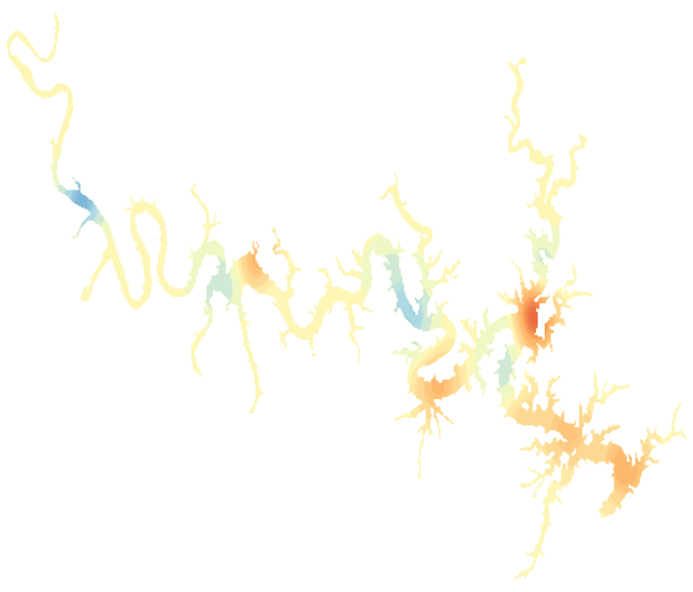

LakeScope › AR
Bull Shoals Lake today
Updated 2026-11-26 - Atlas Labs
Some algae possible, 59°F water, level falling, 2 ft below normal, windy Thursday (15 mph NW).
Water level
651.85 ft
U.S. Army Corps of Engineers - 2026-11-26
7-day trend: falling (-0.25 ft). Compared with normal for this date: -2.5 ft (same weeks, 2016-2025).
Water clarity and algae
Some algae possible Last clear view: a few days ago.
Surface temperature
59°F
seen from space on 2026-11-23

Ice
Open - 0% ice cover
Estimate from weather and satellite, not a measurement. Check the ice yourself before going on it.
Weather, next 3 days
| Day | Sky | High / low | Wind | Rain |
|---|---|---|---|---|
| Thursday | Slight Chance Snow Showers then Rain And Snow Showers Likely | 42 / 28°F | 15 mph NW | 64% |
| Friday | Mostly Sunny | 56 / 36°F | 5 mph W | 0% |
| Saturday | Partly Sunny | 63 / 45°F | 5 mph SSW | 0% |
Sunrise 06:59 - sunset 16:56 - Full moon. National Weather Service.
Get the LakeScope app: alerts and the 3-D view of Bull Shoals Lake